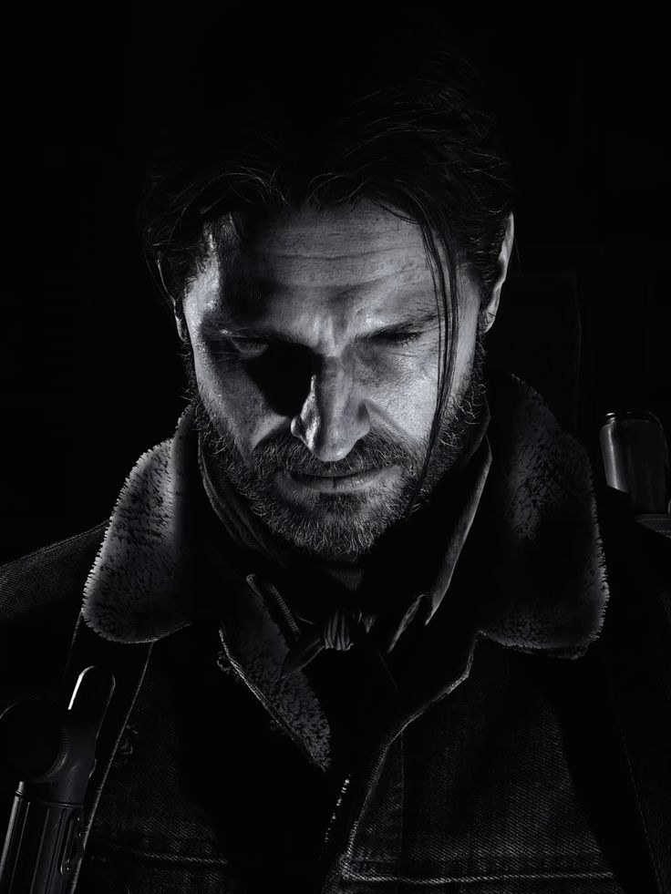
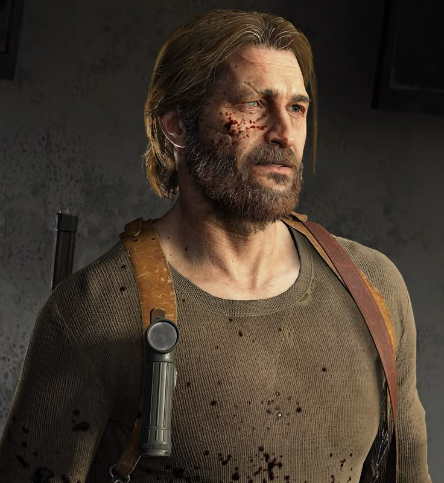
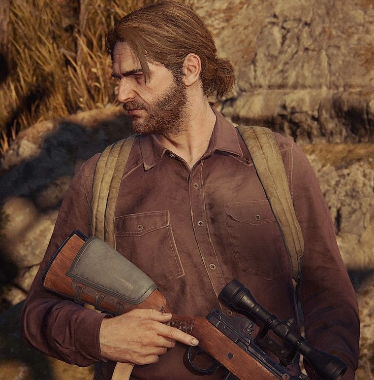
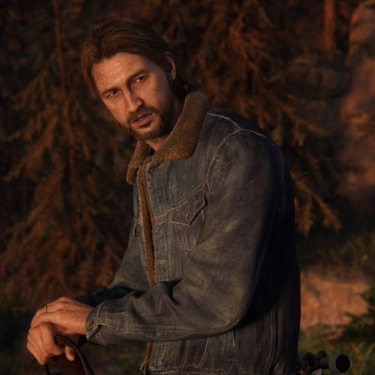

Tommy Miller
Adı: Tommy Miller
Yakınları: Joel Miller(Kardeşi), Maria(Eşi)
Mesleği: Devriye görevlisi, Hayatta kalan ve eski bir Ateş Böceği
Yaşadığı yer: Jackson,Wyoming ABD
Durumu: Hayatta
Fotoğraf Galerisi




Tommy'nin Hikâyesi
1. Salgın Öncesindeki Hayatı
Tommy Miller, Joel Miller'ın küçük kardeşidir. İkisi de Teksas'ta büyümüş ve yetişkinliklerinde inşaat sektöründe çalışmıştır. Tommy, Joel'in kızı Sarah'nın amcasıdır ve salgından önce ailesiyle yakın bir ilişkiye sahiptir. Joel'in hayatındaki en önemli insanlardan biri olan Tommy, onunla birlikte sıradan bir yaşam sürerken dünyanın tamamen değişeceğinden habersizdir.
2. Salgının Başladığı Gün
Cordyceps salgını başladığında Tommy, Joel ve Sarah'nın şehirden kaçmasına yardım eder. Üçü arabayla güvenli bir yer bulmaya çalışırken yolları askerlerle kesişir. Kaçış sırasında Sarah ağır yaralanır. Joel kızını kucağında taşırken bir asker onlara ateş açar. Tommy, Joel ve Sarah'yı kurtarmaya çalışsa da Sarah'nın hayatını kaybetmesine engel olamaz.
Sarah'nın ölümü Joel'i derinden yaralar. Tommy de aynı felaketin içinden geçerek hayatta kalmaya çalışır. İki kardeş, salgından sonraki yıllarda birlikte hareket eder; ancak hayatta kalmak için benimsedikleri yöntemler ve dünyaya bakışları zamanla aralarındaki ilişkiyi zorlaştırır.
3. Joel ile Yollarının Ayrılması
Salgından sonraki yıllarda Tommy ve Joel, tehlikelerle dolu bir dünyada hayatta kalabilmek için birçok zor karar verir. Ancak Tommy, yalnızca hayatta kalmaya çalışmanın ötesinde bir amaç arar. Bu nedenle, salgın sonrasında düzeni yeniden kurmayı hedefleyen Fireflies adlı örgüte katılır.
Joel ile Tommy'nin düşünceleri arasındaki farklılıklar zamanla büyür ve iki kardeşin yolları ayrılır. Tommy, Fireflies'ın amaçlarına bir süre bağlı kalsa da sonunda örgütten uzaklaşır. Yıllar boyunca yaşadığı olaylar, onun dünyayı değiştirme düşüncesini yeniden değerlendirmesine neden olur.
4. Maria ve Jackson Topluluğu
Tommy sonunda Wyoming'deki Jackson yerleşimine ulaşır. Burada Maria ile tanışır, ona âşık olur ve onunla evlenir. Maria ve yerleşimdeki diğer insanlar, dış dünyadaki tehlikelere rağmen insanların daha güvenli ve düzenli bir hayat yaşayabileceği bir topluluk oluşturmuştur.
Jackson, Tommy için yalnızca bir sığınak değildir. Burası, geçmişte yaşadığı şiddet ve kayıpların ardından yeniden bir hayat kurabileceği bir yerdir. Tommy, topluluğun güvenliği ve devamlılığı için çalışır. Eski hayatındaki çatışmalardan uzaklaşarak ailesine ve yaşadığı topluluğa önem vermeye başlar.
5. Joel ile Yeniden Buluşması
The Last of Us Part I sırasında Joel, Ellie ile birlikte Tommy'yi bulmak için Jackson'a doğru yol alır. Ellie'nin bağışıklığı, yolculuğun asıl amacını oluşturur; Joel, onu Fireflies'a ulaştırmak için Tommy'nin yardımına ihtiyaç duyar.
İki kardeş yıllar sonra yeniden bir araya gelir. Ancak aralarındaki bağ, geçmişte yaşananların izlerini taşımaktadır. Tommy, Joel'in Ellie'yi koruma konusunda ne kadar ileri gidebileceğini görür. Joel başlangıçta Ellie'yi Tommy'ye emanet etmek ister; çünkü yolculuğa devam etmenin kendisi için giderek daha zor hâle geldiğini düşünür.
Tommy, Ellie'yi teslim almayı kabul etse de Joel ile Ellie arasındaki ilişkinin ne kadar güçlü olduğunu fark eder. Sonunda Joel yolculuğa kendisi devam etmeye karar verir. Tommy ise Jackson'da kalır. Böylece Tommy, ilk oyunun ana yolculuğunda önemli bir rol oynasa da hikâyenin geri kalanında çoğunlukla arka planda kalır.
6. Joel'in Ölümü
The Last of Us Part II başladığında Tommy, Joel ve Ellie Jackson'da yaşamlarını sürdürmektedir. Joel ile Tommy devriye görevlerine çıkar. Ancak bir görev sırasında Abby Anderson ve onun grubuyla karşılaşırlar. Olaylar kısa sürede kontrolden çıkar ve Abby, Joel'i öldürür.
Tommy de Abby'nin grubunun eline düşer. Grup onu ve Ellie'yi hayatta bırakır; ancak Joel'in ölümü Tommy üzerinde ağır bir etki yaratır. Kardeşini kaybetmenin acısı, onun geçmişte geride bırakmaya çalıştığı şiddet dolu dünyaya yeniden dönmesine neden olur.
7. Seattle'da İntikam Arayışı
Tommy, Joel'in ölümünün ardından Abby ve onun grubunu bulmak amacıyla Seattle'a gider. Ellie'nin de aynı şeyi yapmaya kararlı olduğunu bilse de kendi yolunu izler. Seattle'da Abby'nin bağlantılı olduğu Washington Liberation Front (WLF) üyelerini takip eder ve onlardan bilgi almaya çalışır.
Tommy'nin iz sürme ve keskin nişancılık becerileri, onu tehlikeli bir rakip hâline getirir. Abby'nin arkadaşlarından bazılarını öldürür ve grubun peşine düşer. Ancak intikam arayışı, onu da giderek daha fazla tehlikenin içine çeker. Bir zamanlar Jackson'da kurduğu sakin hayat, yerini yeniden şiddet ve kayıp korkusuna bırakır.
8. Abby ile Karşılaşması ve Ağır Yaralanması
Seattle'daki çatışmalar sırasında Tommy, Abby ve arkadaşlarıyla yeniden karşı karşıya gelir. Yaşanan mücadelelerde ağır tehlikeler atlatır; bir noktada Yara tarafından yaralanıp suya düşer. Buna rağmen hayatta kalmayı başarır ve Ellie ile diğerlerine yeniden ulaşır.
Daha sonra Abby, Ellie ve arkadaşlarının bulunduğu tiyatroya gelir. Çıkan çatışmada Jesse hayatını kaybederken Tommy de vurulur. Tommy'nin başından vurulması ve aldığı diğer yaralar onun hayatını tamamen değiştirir. Hayatta kalır, ancak bir gözündeki görme yetisini kaybeder ve yürümekte zorlanmaya başlar.
9. Jackson'a Dönüş ve Değişen Tommy
Tommy, yaşadığı ağır yaralanmaların ardından Jackson'a döner. Ancak fiziksel yaraları kadar yaşadığı kayıplar da onu değiştirmiştir. Maria ile arasındaki ilişki bozulur ve eskiden sahip olduğu yaşamın büyük bölümü artık geride kalmıştır.
Bir süre sonra Tommy, Ellie ile Dina'nın yaşadığı çiftliğe gider. Abby'nin yerini öğrendiğini söyler ve Ellie'den intikamı tamamlamasını ister. Tommy için Joel'in ölümünün hesabını sormak hâlâ önemlidir. Ancak Ellie artık farklı bir hayat kurmaya çalışmakta ve intikamın kendisinden götürdükleriyle yüzleşmektedir.
Ellie'nin yeniden yola çıkmak istememesi, Tommy'yi öfkelendirir. Aralarındaki tartışma, Joel'in ölümünden sonra ikisinin de yaşadığı acıyla nasıl farklı biçimlerde baş etmeye çalıştığını gösterir. Tommy, bir zamanlar Ellie'yi korumaya çalışan kişi olmasına rağmen artık ondan kendi intikam arayışını sürdürmesini beklemektedir.
10. Tommy'nin Hikâyesinin Anlamı
Tommy'nin hikâyesi, intikamın yalnızca hedef alınan kişilerin hayatını değil, intikam peşinden giden insanların kendi hayatlarını da nasıl değiştirdiğini gösterir. Jackson'da bir aile ve topluluk kurarak geçmişinden uzaklaşmaya çalışan Tommy, Joel'in ölümüyle yeniden şiddetin içine sürüklenir.
The Last of Us Part II'nin sonunda Tommy hayattadır; ancak fiziksel durumu, Maria ile ilişkisi ve geleceği belirsizdir. Oyun, onun sonraki hayatında neler yaşadığını kesin olarak açıklamaz. Tommy'nin hikâyesi, sevdiği insanları korumak isteyen bir adamın, kayıplarının ve öfkesinin etkisiyle nasıl değişebildiğini anlatır.
11. Silah Uzmanlığı
Kendisi aynı zamanda keskin nişancı tüfeği kullanımı konusunda uzmandır. Bir zamanlar Ellie'yede eğitim vermiştir. Hayatta kalma konusunda tam bir uzman